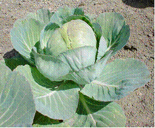
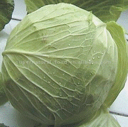
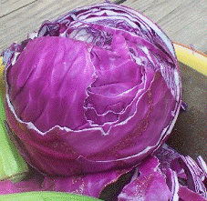
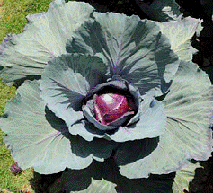
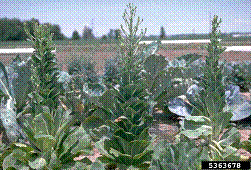
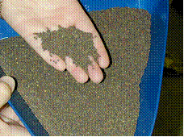
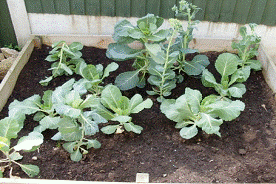

HORT 281 :: Lecture 12 :: ORIGIN, AREA, PRODUCTION, VARIETIES, PACKAGE OF PRACTICES FOR COLE CROPS CABBAGE

Origin, area, production, varieties, package of practices for COLE CROPS CABBAGE
CABBAGE – Brassica oleracea var. capitata Linn
Family: Crucifereae
Chromosome Number: 2n =2x =18
Origin and History
Cabbage originated from a wild non heading type, ‘Cole wart’ (Brassica oleracea var. sylvestris). The genus Brassica includes about 100 species, majorities of which are native to the Mediterranean region. The crop is attributed to Mediterranean centre of origin. It is also considered that the real headed cabbage was evolved in Germany. The Savoy cabbage originated in Italy and spread to France and Germany in the sixteenth and seventh centuries. At present, cabbage is grown in Caribbean countries, Indonesia, Malaysia, Central East and West America.
|  |  |  |
 |
||
Nutritive Value and Uses
Cabbage leaves are low in calories (27 per cent), fat (0.1 per cent) and carbohydrates (4.6 per cent). It is good sources of protein (1.3 per cent) which contains all essential amino acids, particularly sulphur containing amino acids. Cabbage proteins are comparable to pea proteins, in biological value, digestibility and NPU. Cabbage is an excellent source of minerals such as calcium (39 mg), iron (0.8 mg), magnesium (10 mg), sodium (14.1 mg), potassium (114 mg) and phosphorus (44 mg). It has substantial amounts of β carotene provitamin A), ascorbic acid, riboflavin, niacin and thiamine. Ascorbic acid content varies from 30-65 mg per 100 g fresh weight. Cooking or shredding of cabbage and leaving it exposed to air can result in substantial loss of ascorbic acid. Red cabbage is a rich source of anthocyanin pigments. Both mono and diacylated cyanidin derivatives have been identified in red cabbage. Cabbage contains thermo labile sulphur compounds, which evolve sulfurous odours. The major volatile sulfur compounds (dimethyl disulfide and hydrogen sulfide) of cooked cabbage are derived from a precursor of 1, S methyl cysteine sulfoxide, a free amino acid. The presence of 2-propenyl isothiocyanate in both white and red cabbage and 3-butenyl isothiocynate in red cabbage has also been reported.
Cabbage is used commonly as vegetables. It is also used for salad mixed in tomato, green chilies, beetroot etc. Flavour in cabbage leaves is due to the glycoside sinigrin. Cabbage contains goitrogens which cause enlargement of thyroid glands. The thioglucosides with their associate enzyme (s) impart the desirable culinary flavour to cabbage, broccoli and cauliflower. The thioglucosides (sinigrin) are non goitrogenic which depends upon enzymatic hydrolysis in presence of the enzyme (progoitrin and epi-goitrin) is the precursors of an anti thyroid compound called goitrin. The goitrin is formed subsequent to hydrolysis and then through cyclization of an unstable isothiocyanate containing hydroxyl group. The total glucosinolate content of white cabbage cultivars ranged from 299-1288 ppm, whereas the goitrin content varied from 1.2 to 26.0 ppm. Although the enzymatic hydrolytic products from the glucosinolates are goitrogenic, some of these breakdown products have anticancerous properties. It has also been reported that most of the goitrogen properties of cabbage could be lost during cooking. Cabbage is well known for its medicinal properties. In ayurvedic medicine, cabbage leaves are prescribed for cough, fever, skin diseases, peptic ulcers, urinary discharge and hemorrhoids. Fresh cabbage juice is reported to contain a heat labile antipeptic ulcer component. A clinical study has indicated that concentrated cabbage juice is significantly effective in healing peptic ulcers. Cabbage is one of the best sources of a sulphur containing amino acids. Fresh cabbage juice is reported to have anti bacterial activity and has been shown to inhibit the growth of various strains of lactic acid bacteria. Cabbage is also reported to have significant anti cancer activity. Model studies and epidemiological data in humans have confirmed the protective role of cabbage studies and epidemiological data in humans have confirmed the protective role of cabbage on the development of cancer.
Area and production
India is the third largest cabbage producer in the world. It is mainly grown in the states like Uttar Pradesh, Orissa, Bihar, Assam, West Bengal, Maharashtra and Karnataka in the country. Area, production and productivity from 1987-1988 to 1998-99 in India are given in Table - 1.
Table 1
Area, Production and Productivity of Cabbage in India
Year |
Area (in 000’HA) |
Per cent of total area |
Production (in 000’MT) |
Per cent of total production |
Productivity to MT / HA |
1987-88 |
42.6 |
1.0 |
602.0 |
1.2 |
14.1 |
1991-92 |
177.3 |
3.2 |
2771.2 |
4.7 |
15.6 |
1992-93 |
188.9 |
3.7 |
3236.8 |
5.1 |
17.1 |
1993-94 |
231.7 |
4.8 |
3592.9 |
5.5 |
15.5 |
1994-95 |
216.8 |
4.3 |
3906.3 |
5.8 |
18.0 |
1995-96 |
218.4 |
4.1 |
3861.7 |
5.4 |
17.7 |
1996-97 |
210.2 |
3.8 |
3613.4 |
4.8 |
17.2 |
1997-98 |
228.2 |
4.1 |
5323.8 |
7.3 |
23.3 |
1998-99 |
239.9 |
4.1 |
5624.8 |
6.4 |
23.4 |
Source : Horticultural Data Base (2000) NHB Gurgaon.
Productivity of cabbage during 1998-99 was 23.4 t /ha in India which was near to the world average productivity 24.1 t /ha. The highest productivity was in Tamil Nadu. The various cabbage growing belts in different states of India are as given below (NHB, 2000)
- Uttranchal : Almora, Chamoli, Utrkashi and Dehradun
- Uttar Pradesh Plains
- Himachal Pradesh
- Haryana :Hisar, Sonepat, Gurgaon, Ambala, Karnal and Panipat.
- Rajasthan : Jaipur, Alwar and Ganganagar.
- Assam
- Bihar : Patna, Nalanda, West and East Champaran, Muzzafarpur, Vaishali, Bhagalpur, Darbangha and Madhubani
- Gujarat : ehsana, Khera, Baroda and Gandhinagar.
- Maharashtra : Nasik and Pune
- Orissa : Baleshwar, Balangir, Cutak, Dhankanan, Ganijam, Koenjhar and Koraput.
- Karnataka : Belgaum, Hassan, Belvey, Mysore, Dakshin Kannad and Tamil Nadu (The Nilgiris).
Apart from India, the other major producers in the world are China, Russian Federation, Japan, Korea, Republic, Poland, USA, Indonesia and Ukraine.
Classification
Bailey (1930) classified the cultivated Oleracea into 7 divisions.
A. The leaf races grown for the open foliage
i) Branching shrubby kales - B. oleracea var. fruticosa
ii) Common biennial mostly unbranching kales- B. oleracea var. acephala.
iii) Low cabbage like Portuguese kales- B. oleracea var. tronchuda.
B. The head races grown for the compact leaf head or buds
iv) Edible product a terminal head, the cabbage- B. oleracea var. capitata.
v) Edible product lateral small heads or buds, the Brussels sprouts- B. oleracea var. gemmifera.
C. The inflorescence races grown for the modified thickened flower shoots of malformed flowers.
vi). Flowers only partially if at all modified- B. oleracea var. italica.
vii). Flowers thickened and malformed into a head or several head- B. oleracea var. botrytis.
Cabbage can also be classified in various ways
- Place of Origin: (a) B. oleracea var. capitata ssp. mediterranea, e.g. Mediterranean cabbage (b) B. oelracea var. capitata ssp. orientalis, e.g. Oriental cabbage (c). B. oleracea var. capitata ssp. europea. E.g. European cabbage.
- Botanical Colour and Form of Heads : (a) B. oleracea var. capitata L.f. alba, e.g. white cabbage (b) B. oelracea var. capitata L.f. rubra, e.g. red cabbage (c) B. oleracea var. sabauda e.g. savoy cabbage.
- On the Basis of Head Shape (Choudhary, 1976). : (a) Round shape head or ball head type (Golden Acre, Pride of India, Copenhagen Market and Mammoth Rock Red (b) Flat head or drum head type (Pusa Drum Head) (c) Conical head type (Jersy Wakefield) (d) Savoy type (‘Chieftain’).
Classification Based on the Size and Shape of the Head (Allen, 1914): (a) Wakefield and Winnings Kadt group:- head are small, conical and very early (Jersy Wakefield, Charleston Wakefield). (b) Copenhagen Market group:-round heads, early large head, (Copenhagen Market, Golden Drumhead, Globe, Bonanza). (c) Flat Head or Drumhead group:-heads flattened from both ends (Pusa Drum Head, Early round Dutch, All Head Early, Succession, All Seasons). (d). Savoy group:-leaves are wrinkled; heads are of very high quality, limited commercial use (Drum Head Savoy, Improved American Savoy, and Chieftain). (e) Danish Ball Head group:-leaves are thin, heads compact solid, medium sized, good keeping quality, fine texture (Danish Ball Head, Hollander, Wisconsin Ball Head). (f) Alpha group:-The earliest group head, very small, solid head limited commercial uses, (Miniature Marrow). (g) Volga group:-thick leaves, shining blue coloured leaves, loose bottom (Volga). (h) Red
- Cabbage group:-similar to Danish Ball Head except red colour of leaves (Red Rock, Red Dutch, Large Red).
Varieties / Hybrids
Bajrang (BSS-50)
The hybrid has been developed at Beejo Sheetal Seeds Pvt. Ltd., Jalna. Heads are dark green, smooth, highly compact. The outer leaves are upright. It matures in 65 days but can stand on the field for 45 days after maturity. It can tolerate high temperature (up to 36oC) and resistant to fusarium wilt. Average head weight is one kilogram.
BSS-44
The hybrid has been developed at Beejo Sheetal Seeds Pvt. Ltd., Jalna. The head is roundish, average weight 2.5 kg and mature in 75 days after transplanting. But, head can also stand for 20 days in field after maturity. This hybrid is resistant to fusarium wilt.
Copenhagen Market
This is still being grown but on a limited area. This is an introduction, which has been replaced by Golden Acre and ‘Pride of India’ because of their earliness and smaller head size.
Early Drumhead
It is an early variety having light green foliage. Leaves are medium to large, curving inward and enclosing the head loosely. Leaves formed, the head fold over each other at the centre. The heads are flat.
Golden Acre
This is an earliest variety evolved by selection from the Copenhagen Market and recommended by IARI for cultivation. It takes about 60-65 days from transplanting to head formation. It has fewer outer leaves which are cup shaped and arranged in two whorls. The heads are solid, short core and weighing of about 1.0-1.5 kg. The heads should be harvested immediately after head formation; otherwise, cracking may take place. If the timely sowings are not done, then the heads formation will be conical (Tiwari et.al., 1977). The variety has also been highly suitable for spring and summer growing in the hills.
H-113
This is a self-incompatible based hybrid between Sel-8 and 83-6 line, developed at IARI, Regional Station, and Katrain. Plants bear roundish, compact head (13.5 x 16 cm), bluish green and waxy leaves, 0.5-0.7 cm stalk length and 50-60 cm frame size (13.5 x 16 cm). It gives average yield of 473.5 q /ha in 60-68 days of crop duration.
Harirani Gole
It is good hybrids for medium alters maturity. It produces medium sized ball shaped dark blackish green, solid head with good wrapper leaves. Each head weight is 1.5-2.0 kg. It can be harvested after 95-100 days of transplanting.
Kranti
It is ready for harvesting within 60 days after transplanting. It is good for close spacing. Heads are round and compact with 0.8 -1.2 kg per head weight.
Jersey Wakefield
It is an introduction with pointed head, which preferred by some growers. It takes about 55-60 days for head information. The outer leaves are few and slightly crinkled. Average weight is 1.0 - 1.5 kg. It has better taste.
Late Drumhead
It is late group variety. It takes about 105-110 days from transplanting to head formation. Stalk is short with small frame and few outer leaves. Heads are uniform, solid, large flat; drum shaped and pale green in colour.
Pride of India
It is an introduction and recommended by Dr. Y.S.Parmar University of Horticulture and Forestry, Solan. The plant type of this variety is similar to ‘Golden Acre’. But it is about a week altering in maturity. It has bigger sized heads, weighing about 1.5 to 2.0 kg per head.
Mitra
It is an early hybrid with excellent head to plant ratio. Heads are fresh green, uniform, compact, ball shaped with weight around 0.8 to 1.2 kg each. It has good field retention ability.
MCV-1
Heads are ready after 80 days from transplanting. It has round shape, bigger head (1.5-2.5 kg) and compact. The foliage is dark green with waxy margins.
Pusa Ageti
It has been developed from TKCBH-28 (F1 hybrid) procured from Taiwan Selection were made F1 generation onwards by using simple recurrent selection. It is the first variety which seed can produce in subtropical climate. It takes about 70-90 days from transplanting to harvesting. Head weight varies from 600 to 1,200 g, yielding 110-380 q/ha, depending upon the time of transplanting. It has medium sized frame, small stalk, upright growing habit, and wax coated grey green foliage, broad lamina with prominent midrib and waxy margin.
Pusa Drum Head
It is an important variety, selected and released by IARI, Regional Station, Katrain (Kullu Valley). Plants have wider frame with 20-25 light green outer leaves with prominent midribs and venation. Heads are solid and flat weighing about e to 4 kg. It takes about 80-90 days from transplanting to head formation and is probably the earliest variety among the Drum Head Group. It also possesses field resistant to black leg (Swarup et al., 1968).
Pusm Mukta (SEL.8)
This is a new variety developed at IARI, Regional Station, Katrain (Kullu Valley) by hybridization between EC 24855 x EC 10109. The light green foliage with wavy margins is a distinguishing character of the variety. It has short stalk, medium frame, and slightly bigger leaves than Golden Acre and wavy puckered at the margins. The heads are compact, slightly flattish round with a loose wrapper leaf at the top. It is about a week later than Golden Acre and average head weight is 1.5-2.0 kg. It is resistant to black rot (Xanthomonas campestris) and has been specially identified for the areas, where this disease is a problem.
Pusa Synthetic
This variety ahs been developed from IARI Regional Station, Katrain (Kullu Valley). It is an early synthetic variety. The yield potential of this variety is 350-460 q/ha.
Red Cababge
All the red cabbage cultivars are tolerant to diamond back moth insect which is serious pest of cabbage. It has distinct coat of wax and produces a head of 1-2 kg, taking about 90 days from transplanting to head formation.
September
It is an introduction from German Democratic Republic is the most popular in the Nilgiris hills and recommended for cultivation by Tamil Nadu State Department of Horticulture. The foliage is dark green with wavy margin. The stalk is long and heads usually tilt on one side after formation. It has solid, flattish round to slightly oblong heads. It has very good keeping quality. This variety takes about 96 to 100 days from transplanting to head formation.
Sri Ganesh Gol
The hybrid has been developed at Maharashtra Hybrid Seeds Co. Ltd., Jalna and recommended for cultivation in Andhra Pradesh, eastern Part of Madhya Pradesh and Orissa. Plants are vigorous. Heads are round, compact, attractive, bluish green and become ready for harvest in 90 to 95 days after nursery sowing. It is resistant to yellowing. It is good transport quality. It gives an average yield of 500 to 750 q/ha.
Suhda (BSS-115)
The hybrid has been developed at Beejo Sheetal Seeds Pvt. Ltd., Jalna. Heads are highly compact and mature in 75 days. This hybrid can be grown round the year. The average weight of head is 2-3 kg. This hybrid is resistant to fusarium wilt.
Suvarna (BSS-32)
The hybrid has been developed at Beejo Sheetal Seeds Pvt. Ltd., Jalna. Heads are round and average head weight is 3 kg. This hybrid has strong smooth outer leaves. It matures in 110 days.
Questo
It is a high yielder hybrid and has ability to stand over severe hot conditions. Head can stand in the field conditions up to 70 days. After maturity, heads are compact round and very solid with dark blackish colour. It is good for tropical climate.
Climatic Requirements
Cabbage can be grown easily under a wide range of environmental conditions but cool moist climate is most suitable. The optimum soil temperature for seed germination is (22-26.2oC). The optimum temperature for growth is between (25.2 to 34.2oC). Whereas, temperature above 43.2oC, growth is arrested in most of the cultivars. Minimum temperature for growth of cabbage is just above 0oC. It is reported that after cold treatment at 4 to 10oC for 7-9 weeks, the plant bolt sooner and flower more abundantly than when exposed to such temperatures for shorter period but before this temperature treatment, plants must have passed juvenile phase. (Nieuwhoff, 1969).
Soil Conditions
Cabbage can be grown in wide range of sandy to heavy soils. Early cultivars grow well in light soils, whereas, maturing ones perform better on heavy soils. However, well-drained soils give larger yields. The optimum pH of soil for cabbage cultivation is between 6.0-6.5. Most of the cabbage is somewhat tolerant to salt. In saline soils, the plants show die back of leaf margins and dark foliage and it become more susceptible to diseases like black leg.
Sowing Time
Seed-sowing time varies in different parts of India. In hills, especially, in high hills, seeds are sown in May - June for summer / autumn crop. In the hilly areas which receive heavy rains, the summer and autumn crop is rather limited and sowing is undertaken in autumn to harvest them in late spring in early summer by over watering them. In the plains of northern India, sowing in situ or in seedbed starts from early August and continue till November for the late cultivars. In eastern India, sowing is generally started from mid to late September. Sowing is delayed further for areas in the southern hills except in the western and southern peninsular, where the crop can be grown almost round the year by selecting proper cultivars / hybrids.
Seed Rate, Methods of Sowing and Transplanting Distance
About 200-500 g/ha seed is required. Cabbage is a transplanted crop. In India, the seeds are sown in a seedbed. In the plains, the seed beds for early crop require cover to save the small seedlings from rains, while in the high hills, it may be better to grow them under glass flames or poly tunnels. However, the seedlings of mid season or late cultivar may be raised in the open. The soil of nursery bed should be well prepared and free from disease organisms. The sieved well rotten farmyard manure or compost 2 2-3 kg/m2 must
be added in the seedbed. Before sowing, the seed should be treated with any one of fungicide like Thiram, Cerasan, Agrosan or Bavistin @ 2 g/kg seeds. The optimum spacing between rows in the nursery bed is 10 cm and the depth of sowing should be 1.5-2.5 cm. For planting one hectare 200-300 m2 seedbed at the rate of 1 to 2 g per sq. m is required. One-gram seed would give rise to about 1000 seedlings. After sowing, the seed is properly covered with a thin layer of mixture of fine manure and soil. The beds are leveled gently. A regular and good moisture supply is needed for rapid germination of seed and the optimum growth of seedlings. To keep the upper soil of seedbed moist, a thin layer of dry grass is spread on the beds and watering is done in the form of shower either with watering cane or with the help of a sprinkler. But, the seed bed cover should be removed as soon as the emergence of young seedlings above the ground starts. If there is over crowding of seedlings due to thick sowing, the extra seedlings should be thinned out. Attention should also be given for control of diseases and insect pests in the nursery. “Damping off” caused by different fungi viz. Pythium spp. Rhizoctonia spp. is common and severe disease in nursery. The spray of blitox-50 @ 0.3 per cent is effective against this disease.
Generally, 4-6 weeks old seedlings are ready for transplanting but older seedlings up to 8 weeks age can also be transplanted. However, older seedlings have adverse effect on the establishment and growth of young plants. The optimum time of transplanting varies in different climatic conditions. The planting in plains of India can be done from August to December and in hills from April to August. Early maturing cultivars like “Golden Acre” does well in the plains because of shorter cool period, while, “Drum Head Late”, “Pusa Drum Head” and other late maturing varieties performs better in hills, where, cool temperature are available for longer duration. However, cultivars of all maturity groups can be grown in hills of north India by planting on suitable altitudes at optimum time. The planting distance may be varying according to cultivar, planting season and soil conditions. The following distances are generally recommended on the basis of maturity of cultivars viz., for early 45 x 45; cm or 60 x 30 cm, mid 60 x 45 cm and late 60 x 60 cm. The planting is done on the flat land, ridges or in furrows depending on climate and soil conditions. For early planting, ridge method will be more suitable, especially, in areas where the rain occurs at the time of planting. In saline soils, planting should be done in furrows.
Nutritional Requirements and Their Management
Manure’s and fertilizers requirements in cabbage are depend upon fertility status of the soil which is determined by soil testing. However, if soil testing is not possible, then 200-250 q/ha farmyard manure should be applied. It should be thoroughly mixed in the soil before 15-20 days of transplanting. The quantity of nitrogen, phosphorous and potash varies from place to place, as given in Table 2.
Table 2: Recommendations of quantity of nitrogen, phosphorous and potash in cabbage in different states of India (Anon, 2000).
State |
Nutrients (kg/ha) |
Variety |
||
N |
P |
K |
||
Madhya Pradesh (Jabalpur) |
180 |
50 |
50 |
Pride of India |
Uttar Pradesh (Kanpur) |
180 |
60 |
60 |
Pride of India |
Bihar (Sabour) |
150 |
- |
- |
Pride of India. |
Half quantity of nitrogen and full quantity of each phosphorous and potash is applied at the time of transplanting. Remaining quantity of nitrogen is applied at 30-45 days of transplanting.
Intercultural Operations
Regular intercultural operations are necessary for proper aeration of root system and control of weeds to promote healthy plant growth. Two three manual weddings are required. The herbicides like Trifluralin @ 0.5 kg/ha (soil incorporation) and Fluchloralin @ 0.5 kg/ha (soil incorporation) can be used for weed control in cabbage.
Use of Plant Growth regulators
The recommended plant growth regulators (PGRs) in cabbage are given in Table 3.
Table 3
Recommended Plant Growth Regulators (PGR’S) in Cabbage
Name of PGR’S |
Concentration (mg/l) |
Method of application |
Attributes affected |
References |
NAA |
0.1 |
Seed treatment/ |
Improves head |
Chhonkar and Jha, 1963 |
IBA |
0.4 |
Foliar spray |
Size and yield |
Chauhan and Bordia, 1971 Sinha, 1977. |
NAA + chelated Zn |
100 + 0.2 (per cent) |
Foliar spray at 45 days after transplanting |
Increases yield |
Mishra et al., 1984. |
Water Management
Cabbage is very sensitive to soil moisture. Maximum growth and yield can only be obtained when a plentiful supply of water is available to the plants throughout the growth. First irrigation is given just after transplanting of seedlings and thereafter, irrigation may be done at 10-15 days interval according to season and soil conditions. But optimum soil moisture should be maintained regularly. Cabbage is usually irrigated by furrow method of irrigation. Excessive irrigation in early stages causes superficial rooting and washing down of nutrients. Heavy irrigation should also be avoided when the heads have formed, as it will result in splitting of heads.
Harvesting, Yield and Storage
The harvesting of cabbage is done when the heads reach at marketable size. The early cultivars grown under comparatively warmer conditions develop loose head at the initial stage, but became harder at maturity. In some cultivars, the heads start cracking soon after the maturity. In such cases, the quality of head is deteriorates fast, if harvesting is delayed. Hence, harvesting should be done at right stage for getting good quality head. The early cultivars take 60-80 days, medium 80-100 days and alter 100-130 days for harvesting after transplanting. The yield of early cabbage variety ranges between 300-400 q/ha, whereas, medium and late cabbage 400-600 q/ha in northern plain. Cabbage can be stored at 0oC and 90-95 per cent RH for about 2 to 8 months (Mercontilia, 1989).
Diseases and Pests
Diseases
Fungal Diseases
Downy Mildew (Perenospora parasitica)
Plant can be infected at any time during their growing period. Young plants infected early show a white mildew growth mostly on the under side of leaf. Later, however, slight yellowing shows up the corresponding upper surface. The young leaf may drop off. Older leaves usually persist and the infected areas enlarge as they turn tan and papery. When the disease is severe the whole leaf dies.
Control Measures
It can be controlled by spray the seedling in the nursery bed with copper oxychloride (0.3 per cent)
Wire Stem (Rhizoctonia solani Kuhn)
It may attack different stages of growth. Young seedlings suffer the worst. Young plants shows soft water soaked post on the skin just above the ground. The cotyledons wither and the plant eventually falls over and perishes. The fungus also causes head rot in cabbage. The first sign of infection is a reddish brown discoloration on the stem at the soil level. The area is constricted and the plant may be bent or twisted without breaking.
Control Measures
Regulating moisture levels, seed treatment and soil drenching with Dithane M-45 (0.2 per cent) or Bavistin (0.1 per cent) can be used for protection against the disease.
Black Spot (Alternaria brassicae (Berk) Sacc.)
The first symptom is a small dark spot on the leaf surfaces. As the spot enlarges, concentric rings develop. The diseased spot enlarges progressively and defoliate plants. It is a destructive disease on seed crop, affecting pods and seeds.
Control Measures
Spray Captan (0.2 per cent) or Copper oxychloride (0.5 per cent) for the control of disease (Sridhar, 1982).
Cabbage Yellow (Fusarium oxysproum f. sp conglutinans (Wollenweber) Snyder and Hansen)
Affected plants have a sickly dwarfed yellow appearance, lower leaves drop one by one and growth of the plant becomes stunted. The fungus is seed borne and can also in soil persist many years. Disease development is promoted by warm weather conditions.
Control Measures
Disease management is difficult. Field sanitation, crop rotation and using disease free seeds are useful for controlling the disease up to some extent. Since, resistant cultivars are available, it is better to use them rather than to try other means of control. There are two types of resistant reported.
Type A
Single dominant gene controls the resistance, found first in cabbage cultivars All Head Early, Copenhagen Market, Glory of Enkhuizen (Walker and Wellman, 1928). It is stable at different soil temperature. This apparently has been derived directly from B. oleraceae var. sylvestris.
Type B
The cabbage cultivar Wisconsion Hollander has this type of resistance. Both A and B types are found in Wisconsion All season.
Black Leg (Phoma lingam) (Tode ex Fr.) Desm
It occurs in most of the regions especially in area with rainfall during the growing period. The fungus is carried by the seed and hence it may occur from the early stage. Stem of the affected plant when split vertically, shows severe black discoloration of sap stream. Whole root system decays from bottom upward. Frequently, the affected plants fall over in the field.
Control Measures
- As the main infection is through seeds, hot water treatment can be prevented
- Spraying Copper oxychloride or with Organomercuric compound and
- Use of resistant variety like Pusa Drumhead.
Bacterial Diseases
Black Rot of Crucifers (Xanthomonas capestris pv. Campestris (Pammel) Dowson)
The disease was first observed in the USA on cabbage in 1891, but the causal bacterium was identified during 1895. In India, disease was first described in 1928 on cabbage from Pune, Maharastra (Patwardhan, 1928). The infected plant become stunted, often one side of cotyledon turn yellow to black bend down and drop off prematurely. Many lower leaves are also shed off early. The remaining leaves may turn yellow with blackened veins. Development of ‘V’ shaped chlorotic to yellow lesions take place from the leaf margin. The vein and vein let turn black and the leaf tissue necrotic and brittle. Lesion progress towards the midrib and from this systematic infection further spread into stem and root. Vascular tissues in affected parts become conspicuously black, followed by internal break down of fleshy tissue. Black sunken spots may develop on succulent seed stocks and siliqua.
Control Measures
Considerable reduction in disease has been observed when seeds are treated with Plantomycin (100 ppm) (Kishan, 1981a) or Agrimycin 100 (100 ppm) (Rao and Kishan, 1986) or Streptocyclin (100 ppm) (Shah et al., 1985) or Auromycin (1: 1000) (Trivedi and Patel, 1972).
Spot of Cabbage (Pseudomonas cichorii (Swingle) Staff)
It was first reported from USA in 1956. In India, it was reported by Trivedi and Patel (1972) in 1961 from Solan. The spots on cabbage heads are circular to oblong, translucent, buff to brown, 7-12 mm in diameter, sunken and having typical donations. Lesions on the inner leaves are irregular on outline, almost black in colour and localized near the margin of young leaves. The vascular bundles of stem become dark brown. Elongated and sunken lesion, 5-7 cm in size also develops on petiole and mid ribs of the lower leaves.
Control Measures
As in black rot of cabbage.
Club Root (Plasmodiophora brassicae War.)
This is a typical root parasite. Club root is particularly prevalent in soils with a pH above 7. Once affected, it causes irregular galls on the roots and these on the lateral roots take the shape of spindle. Leaves become yellowish and wilt.
Control Measures
- At the planting time, 250 ml of 0.05 to 0.10 per cent solution of mercuric chloride may be applied for direct control.
- Roots are treated with 4 per cent calomel paste before transplanting and
- Use of resistant variety like Badger Shipper.
Pests
Leaf Webber (Crocidolomia binotalis Zelelr): Adult moths are small and light brown coloured. Eggs are laid in clusters on the under surface of leaves and held together by gelatinous glue.
Control Measures
- Most of the insecticides recommended for diamond back moth control are also effective against leaf Webber.
- In biological control, major natural mortality factors for leaf webber was recorded parasitization by Bracon hebetor Say and Palexorusta solennis (Wlk) in the late larval instars (Singh, 1978).
Mustard Sawfly (Althalia lugens proxima Klug)
The blackish caterpillar that attacks all Cole crops and feed on leaves of young seedling in the early stages. The infested leaves become curl and falls on the ground when touched.
Control Measures
- If low infestation and number of attacked plants are few, hand picking of caterpillar, is the best method of controlling the larvae.
- Dusting the plants with sevin @ 20-25 kg per hectare or spraying the same @ 5 g per litre of water is also effective to control this insect.
Mustard Aphids (Lipaphis erysimi Kalt)
This is a greenish white small insect that attacks cabbage and other cole crops, when there is a cloudy weather. They suck the sap from the plants. The affected leaves get curled and plants wither and die.
Control Measures
- Aphid can effectively be controlled by spraying the crop with any one of the insecticides like Methyl Dematon (Metasystox-25 EC, Hexasystox-35 EC, etc.) or Dimethoate (Rogar 30 EC, Methoate 30 EC, Sumidon, Demidon, etc. @ 1 ml per litre of water or Phosphomidon (Demacron 100 EC, Sumidon, Demidon, etc.) @ 0.5 ml per litre of water, starting just after the germination of seed and subsequently at an interval of 15 days.
- Soil application of Phorate 10 G @ 15 kg/ha or Thimmet 10 G @ 12 kg per hectare in two doses i.e., half at the time of planting and other half at the time of earthing up has also been effective against aphids.
Diamond Back Moth (Plutella xylostella L.)
In India, it was first recorded in 1914 (Fletcher, 1914) on cruciferous vegetables. A small slender pale green caterpillar that feeds on leaves and makes holes in them. The infested crop becomes unsuitable for marketing.
Control Measures
The pest can be control by (i) Foliar spray twice or thrice Cypermethrin (0.2 kg a.i.) or Femvalerate (0.1 kg a.i. /ha) or Sulprofos (1.0 kg a.i./ha) or Prothiophos (0.75 kg a.i./ha). (ii) Under All India Co-coordinated Vegetable Improvement Projects on control of diamond back moth (DBM) results revealed that against DBM and leaf Webber, three sprays of Femvalerate @ 50g.a.i./ha has found to give maximum cost benefit ratio at IIHR, Bangalore (Anon, 2000). The use of mustard as trap crop proved quite effective in controlling diamond back moth incidence. Hence, this practice has been recommended to control diamond back moth throughout India. Mustard crop should be sown 15 days before cabbage planting. Two to three sprays of Dichlorphos @ 1 kg a.i./ha in mustard and two sprays of Cartap hydrochloride @ 500 g.a.i./ha or 5 per cent neem seed kernel extract in cabbage, starting from primordial stage of the crop at 15 days interval has been recommended.
Cabbage Borer (Hellula undalis F.)
A white brown caterpillar that mines the leaves and feed on shoots. Later, it burrows into the stem of cabbage. The affected plants wilt, remain dwarf or may even die.
Control Measures
Chemicals recommended for diamond back moth and leaf Webber control are also effective for cabbage borer.
Cabbage Butter Fly (Pieris brassicae Linn.)
The maggots first attack the young rootlets and then burrow into the main roots. The affected plants become yellow, wilt and sometimes they may die.
Control Measures
Sprays of 0.15 per cent Carbaryl and 0.4 per cent fungicide give adequate control of the pest (Atwal and Singh, 1969).
Painted Bug (Bagada crucifer arum Kirk.)
The adult and nymph of this pest suck the sap from the plants and retard their normal growth.
Control Measures
Same as for aphids.
Seed Production and Seed Certification Standards
Seed Production
Climatic Requirements
Cabbage thrives in a relatively cool, moist climate with moderate rainfall, well distributed during the growing season. It can withstand frost in the head stage. It requires a dormant period of cool temperature to bolt and initiate seed stalks and flower. Cool temperatures, however, are effective only after stem diameter, is one cm at least. In temperate climates, this occurs during the winter after the first season growth. Flowering and seed production follow in the second year. Headed plants form seed stalks when exposed to mean temperature of about 5oC for six to eight weeks. In India, seed production of cabbage is possible only in hilly areas.
Land Requirements
Land to be used for seed production of cabbage should be free from volunteer plants.
Methods of Seed Production
Being a biennial, cabbage requires two seasons to produce seed. In the first season, the heads are produced and in the following seasons seed production follows. The seed crop can be left in situ or transplanted during autumn. In situ method is usually followed for certified seed production and the later for nucleus seed production.
In situ method, the crop is allowed to over winter and produce seed in their original position, i.e. where they are first planted in the seedling stage. In the transplanting method, the mature plants are uprooted. After removing whorls, the plants are immediately reset in a well prepared new fields in such a way that he whole stem below the head goes underground with the head resting just above their surface.
There are three methods to produce seed of cabbage.
Stump Method
In this method, when the crop in the first season is fully mature, the heads are examined for true to type. The plants with off type heads are removed. Then heads are cut just below the base by means of a sharp knife, keeping the stem with outer whorl of leaves intact. The beheaded portion of the plant is called “stump”. The heads are marketed and the stumps either are leaf in situ replanted in the second season i.e. during autumn. The following spring, after the dormancy is broken, the bud sprout forms the axils of all the leaves and leaf scars.
Advantages
- Gives extra income by way of sale of heads.
- The crop matures 12-15 days earlier than the head intact method and
- Seed yield is slightly increased.
Disadvantages
In this method, flowering shoots are decumbent and require very heavy staking otherwise they breakdown very easily while interculturing or spraying.
Stump with Central Core Method
In this method, when the crop is fully mature in the first season, the heads are examined for true to type. Plants with off type heads are removed and rejected. Then the heads are chopped on all sides with downward perpendicular cuts in such a way that the central core is not damaged. This is an improvement over stump method in that the shoots arising from the main system are not decumbent. During the last week of February and until 15th March, when the heads start bursting, two vertical cross cuts are given to the head. Taking care that the central growing point is not injured. In the absence of such cuts, the heads burst out irregularly and sometimes the growing tip is broken. The operation is completed by going around the field twice or thrice during this period.
Advantages
(i) Shoots arising from the main stem are not decumbent, hence very heavy staking is not required and (ii) Seed yield is increased.
Disadvantages
The chopped heads cannot be marketed.
Head Intact Method
In this method, when the crop is fully mature in the first season, the heads are examined for true to type. The plants with off type heads are removed from the field. The head is kept intact and only a cross cut is given to facilitate the emergence of a stalk.
Advantages
- The removal for heads (stump method) or chopping of heads on all sides (central core intact method) is not required. This saves time and labour.
- Very heavy staking is not required.
Disadvantages
The seed yield is slightly low as compared to stump, or stump with central core intact method.
Brief Cultural Practices (in situ Method)
Time of Sowing and Transplanting
The sowing time of different varieties should be so adjusted as to complete head formation by the end of October or first week of November, at that time, the mean temperature falls to 10oC or below, at this temperature, the heads stand best for over wintering. Early varieties like ‘Golden Acre’ should be sown from 10th to 25th July and transplanted when the seedlings are three to four week old, during the second fortnight of August. This sowing time must be strictly adhered to, as the crop from the early sowings has matured head during September (20oC). The heads get infected with bacterial stock rot, which sometimes is very severe. The late crop, planted during September does not form heads and bolts directly during spring and the seed grower is not able to ascertain purity of the crop. Medium late varieties like Bruppe’s Sure Head, and alter varieties like Drum Head, which takes about 2 to 3 months to produce mature heads, should be sown during the second and first fortnight of June, respectively and transplanting finished by the first week of August. The mean temperature 22.5oC, 20oC and 14oC of August, September and October, respectively, afford optimum requirements for growth and head formation. The later transplanted crop starts head formation during spring and continues up to June and usually does not produce seed stalks.
Method of Nursery Sowing
The seeds are sown in raised nursery beds in a manner as described earlier in commercial production of cabbage.
Source of Seed and Seed Rate
Obtain nucleus / breeder’s / foundation seed from source approved by a seed certification agency. For main season and alter varieties, 375 to 400 g seeds/ha and early varieties, 600-700 g seeds/ha.
Preparation of Land for Transplanting
Prepare the land to a fine tilth by repeated ploughing and harrowing followed by leveling.
Manure and Fertilizers
Cabbage grows satisfactorily only when the supply of organic mater is liberal. For good crop, apply 500 to 600 quintal of farmyard manure per hectare at the time of land preparation. Apply 100 kg/ha I nitrogen, 60 kg/ha phosphorus and 60 kg/ha of potash by drilling, or by broadcasting, sufficiently before transplanting the seedlings. Give another dose of 50 kg/ha nitrogen as surface application at the time of seed stalk emergence during March. Extra application of nitrogen may be given as and when there is a need before flowering starts, depending upon the condition of the crop.
Transplanting
Three to four week old seedlings are transplanted. Transplanting should preferably be done in the evening and the field irrigated immediately afterwards.
Spacing
Late varieties - 60 x 60 cm; Medium varieties 60 x 45 cm; Early varieties 45 x 45 cm.
Irrigation
Cabbage requires a continuous supply of moisture. Irrigate the crop as frequently as required. Heavy irrigation should, however, be avoided when the heads have formed. A sudden heavy irrigation after a dry spell may cause bursting of heads.
Hoeing and Weeding
At least three weddings and hoeing till the end of October are essential. One weeding and earthling up during November and December and the second during March when seed stalks have emerged, control weeds and also help in proper drainage during winter and thereafter.
Staking
After the flower stalk are sufficiently developed, staking is necessary to keep the plants in an upright position.
Handling the mature head
After the planted crop has fully developed heads at the close of autumn, the next step is the handling of these plants for seed production. Handling of plants can be done by any one of the three methods i.e. stump, stump with central core intact methods, described earlier.
Rouging
The first rouging is done at the time of handling of the mature heads. All off type plants, diseased, or otherwise undesirable types, are removed at this stage. The second rouging is done before the heads start bursting. The loose leafed, poorly heading plants and those having a long stem with heavy frame must be rouged out at his stage. It is highly undesirable to keep such poor plants in the seed plots. Subsequent rouging for off types, diseased plants affected by, black leg, soft rot or leaf spot should be done from time to time as required.
Harvesting and Threshing
Cabbage starts seed stalk elongation from 10-20th March when the mean temperature rises to 10-13oC. Flowering and pod formation starts during the first week of April at mean temperature of 13-18.5oC. From 15th April to 15th May, the crop is in full flush of flowering and fruiting. The ripening of pods commences by 15th June to 20th June and the harvesting continues up to second week of July. At mean temperatures below 20oC during June and July, the maturity of crop is delayed at least by a fortnight and the harvesting may continue up to July end. To avoid shattering of seeds, the whole crop is harvested in two or three lots with sickles. Generally, the early plants are harvested first, and when the pod colour is about 60-70 per cent of the rest of the crop changes to yellowish brown, it is harvested completely and piled up for curing. After 4-5 days, it is then threshed with sticks and sifted with hand sifters. After thoroughly drying, seeds are cleaned and stored.
Seed yield: 500-600 kg per hectare.

Cabbage bolting |
 Cabbage seeds |
|
 |
||
Seed Certification Standards
I. Field Inspection
A minimum of three inspections should be done, the first before the marketable stage, the second at the marketable stage and the third at flowering stage.
II. Field Standards
A. General Requirements
1. Isolation: Seed fields should be isolated from the contaminants shown in column 2 and column 3 of the said Table:
Contaminants |
Minimum disease(Meters) |
|
Fields of other varieties |
1600 |
1000 |
Fields of the same variety not conforming varietal purity |
1600 |
1000 |
B. Specific Requirements:
Factors |
Maximum permitted (per cent) * |
|
Off types |
0.10 |
0.20 |
** Plants affected by seed borne diseases |
0.10 |
0.50 |
* Standards for off types should be met at and after flowering and for seed borne diseases at final inspection.
** Seed borne diseases shall be Black leg (Leptosphaeria maculans (Desm.) Cos. & de Not). Black rot (Xanthomonas campestris cv. campestris (Pamm.) Dawson), Soft Rot (Erwinia carotovora L.R. Jones).
III. Seed Standards
Factors |
Standards for each class |
|
|
Foundation |
Certified |
1 |
2 |
2 |
Pure seed (minimum) |
98.0 per cent |
98.0 per cent |
Inert mater (maximum) |
2.0 per cent |
2.0 per cent |
Weed seeds (maximum) |
5/kg |
10/kg |
Weed seeds (maximum) |
5/kg |
10/kg |
Germination (minimum) |
65 per cent |
65 per cent |
Moisture (maximum) |
7.0 per cent |
7.0 per cent |
For vapour-proof containers (maximum) |
5.0 per cent |
5.0 per cent |
1. Cabbage is propagated by
a. Seeds |
b. Heads |
c. Leaf cuttings |
d. Meristem tip culture |
2. Commercial part of cabbage is
a. Head |
b. Curd |
c. Leaf |
d. Stem |
3. Alkaloid present in cabbage
a. Sinigrin |
b. Tomatin |
c. Salanine |
d. Tangerine |
4. Whiptail is caused due to the deficiency of
a. Molybdenum |
b. Nitrogen |
c. Phosphorus |
d. Potash |
5. __________ is the method of commercial seed production in cabbage
a. Head to seed |
b. Seed to seed |
c. Stump method |
d. All the above |
| Download this lecture as PDF here |